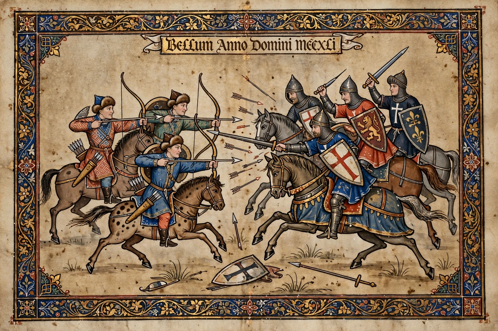

| Battle of Legnica (Liegnitz) | |
|---|---|
| Date | 9 April 1241 |
| Location | Near Legnica, Silesia (modern Poland) |
| Result | Mongol victory |
| Belligerents | Mongol Empire vs. Polish duchies, military orders (Templars, Hospitallers, Teutonic Knights), Bohemian forces en route |
| Commanders | Baidu and Kadan (Mongols); Henry II the Pious † (Polish) |

The Battle of Legnica (Polish: Bitwa pod Legnicą), also known as the Battle of Liegnitz or the Battle of Wahlstatt, was fought on 9 April 1241 near the town of Legnica in Silesia during the first Mongol invasion of Europe. A Mongol detachment under Baidu and Kadan annihilated the army of Duke Henry II the Pious of Silesia, who was killed in the battle, together with contingents of the knightly orders.
The northern Mongol army, a diversionary force of perhaps 8,000–20,000 men under princes Baidu and Kadan (operating under the overall command of Subutai and Batu Khan), invaded Poland to prevent the Poles and Bohemians from aiding Hungary, the main target. After victories at Tursko and Chmielnik and the sack of Kraków, the Mongols advanced into Silesia. Henry II gathered Polish forces and knights of the Templars, Hospitallers and Teutonic Order at Legnica, awaiting reinforcements from King Wenceslaus I of Bohemia, who was a day's march away.
Henry attacked before the Bohemians could arrive. According to the principal account (preserved in later chronicles), Mongol feigned retreats drew out the Polish cavalry, Mongol smoke screens and heavy archery broke up the Polish formations, and an apparent misunderstanding of a shouted warning ("Run! Run!" in Polish, overheard as a command) triggered panic. Henry was captured and beheaded; legend says the Mongols filled nine sacks with the ears of the slain. The main Mongol army won its great victory at Mohi in Hungary two days later.
The Mongols did not attempt to occupy Poland; having neutralised the northern flank, they turned south to join the main invasion of Hungary, withdrawing from Europe in 1242 after the death of Ögedei Khan. Silesia was devastated, and Henry's death deepened the fragmentation of Poland. The battlefield site, Legnickie Pole, preserves a museum and the church of St Hedwig, Henry's mother.